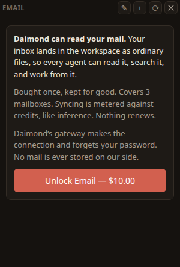
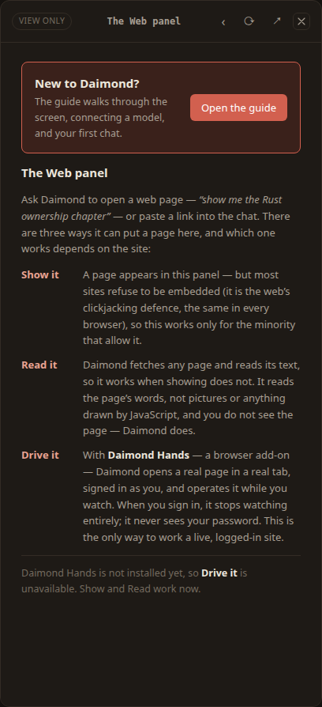
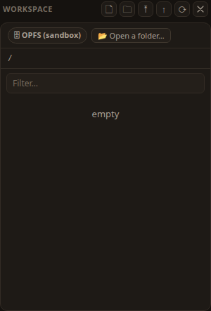
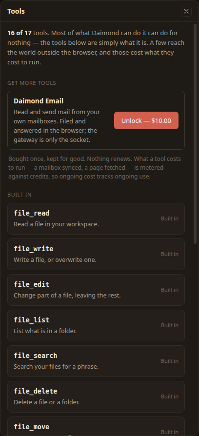

Email, Web & files
The sources a daimon works from: mail you can read and answer, web pages it can show or drive, files it can read and write, and the tools it does the work with.
The Email panel lives in the dock, on the right. It holds your mailboxes and what is in them. A browser cannot open a mail connection on its own, so Daimond makes the connection through a gateway, which hands back the raw message and then forgets your credential. Your mail is written into the Workspace as ordinary files, so the agent's file tools already read it.

Adding a mailbox
Choose + (add a mailbox) in the Email panel header. Type your address and Daimond guesses the server settings for common providers; every field stays editable, because a guess is not a fact. Most providers want an app password — a one-purpose password you generate in your mail account's security settings — rather than your account password. The panel tells you where to find it for your provider.
Reading and syncing
Choose ⟳ (sync now) to fetch what has arrived. A sync asks only for messages newer than the last one held, so it stays quick. Click a message to open it onto the stage, beside the chat, so you can ask the daimon about it while you read.
Writing a message
Choose ✎ (write a message) to open the Compose panel on the stage. Fill in From, To, an optional Cc, a Subject and the body; attach files with Attach…; keep a draft with Save draft. Nothing sends by itself.
The Web panel
Ask Daimond to open a web page — “show me the Rust ownership chapter” — or paste a link into the chat. There are three ways it can put a page on the stage, and which one works depends on the site.

Show it
The page appears in the panel — but most sites refuse to be embedded (it is the web's clickjacking defence, the same in every browser), so this works only for the minority that allow it.
Read it
Daimond fetches the page and reads its text, so it works when showing does not. It reads the words, not pictures or anything drawn by JavaScript, and you do not see the page — Daimond does.
Drive it
With Daimond Hands, a browser add-on, Daimond opens a real page in a real tab, signed in as you, and works it while you watch. This is the only way to work a live, logged-in site.
The Workspace
The Workspace panel, in the dock, is your files as an ordinary tree of folders. This is where the agent reads and writes: uploads, mail, documents and anything it produces all live here.

The sandbox, and a real folder
By default your files live in this browser's own private storage, kept on your device and reachable by nothing outside Daimond. Where the browser allows it, Daimond can also open a real folder on your device, so the agent works directly with files you can see in your own file manager. The admin panel's storage rows show how much space each is using; the real-folder row appears only when the browser can open one.
Working with files
The Workspace header carries buttons to add a 🗋 file, add a 🗀 folder, ⤒ upload files, go ↑ up a level, and ⟳ refresh the view. A filter box narrows a long list.
Tools
Open the Tools · N of M row in the admin panel to see what Daimond can do. It is called Tools, not Upgrades, because most of what it lists is free and already yours.

Two kinds of tool appear:
- Built-in tools — the ones the agent is already handed, free. The panel lists exactly what the agent actually holds, so it cannot promise a tool that is not there.
- Unlockable tools — extras with a price. The panel shows the price and whether this account already holds the unlock.
To add an unlockable tool, choose it in the panel and confirm the unlock; the cost is drawn from your credits, and once unlocked it stays available to the agent.